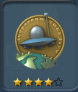
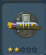
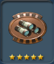
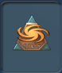

目次 > ゲームについて > シミュレーション攻略 > SPORE > コレクション一覧 > 宇宙ステージ
らんの眼
SPORE
| |
[ 1 ] [ 2 ] [ 3 ] [ 4 ] [ 5 ] [ 6 ] |
| 名前 |
画像 |
入手条件 |
| ボディガード |
 |
攻撃から仲間を2体守る |
| 攻撃から仲間を5体守る |
| 攻撃から仲間を10体守る |
| 攻撃から仲間を20体守る |
| 攻撃から仲間を35体守る |
| 脳外科医 |
|
1種類のクリーチャーを集落ステージまで進化させる |
| 5種類のクリーチャーを集落ステージまで進化させる |
| |
| |
| |
| 艦長のバッヂ |
|
宇宙船で宇宙空間に出られるようになる |
| 清掃員 |
|
根絶ミッションが5個完了する |
| 根絶ミッションを10個完了する |
| |
| |
| |
| コレクター |
|
3個のアーティファクトを入手 |
| 8個のアーティファクトを入手 |
| |
| |
| |
| 開拓者 |
|
コロニー内の建物を5つ建設する |
| コロニー内の建物を20個建設する |
| コロニー内の建物を50個建設する |
| コロニー内の建物を100個建設する |
| コロニー内の建物を200個建設する |
| 征服者 |
|
2個の星系を征服する |
| 5個の星系を征服する |
| 10個の星系を征服する |
| 20個の星系を征服する |
| 50個の星系を征服する |
| 外交官 |
|
同盟を1つ成立させる |
| 同盟を2つ成立させる |
| 5個の同盟を成立させる |
| |
| |
| エコの英雄 |
|
環境危機を2回防ぐ |
| 環境危機を5回防ぐ |
| |
| 環境危機を50回防ぐ |
| |
| 経済学者 |
|
1つの星系を購入する |
| |
| |
| |
| 15個の星系を購入する |
| 名前 |
画像 |
入手条件 |
| 帝国 |
|
3つの星系を支配する |
| 7個の星系を支配する |
| 13個の星系を支配する |
| |
| 35個の星系を支配する |
| 探検者 |
 |
15個の星系を探検する(星系画面にすること) |
| 50個の星系を探索する(星系画面にすること) |
| 100個の星系を探索する(星系画面にすること) |
| 500個の星系を探索する(星系画面にすること) |
| |
| 勤勉な飛行士 |
|
星系間を50回飛行する |
| 星系間を150回飛行する |
| 星系間を400回飛行する |
| |
| 星系間を1500回飛行する |
| 黄金の手 |
|
500,000 スポアバックスを貯める |
| 1,000,000 スポアバックスを貯める |
| 2,500,000 スポアバックスを貯める |
| |
| 10,000,000 スポアバックス貯める |
| 使い走り |
 |
配達ミッションを5個完了する |
| 配達ミッションを10個完了する |
| 配達ミッションを20個完了する |
| |
| |
| 何でも屋 |
|
ツールを5個購入する |
| ツールを20個購入する |
| ツールを50個購入する |
| ツールを100個購入する |
| ツールを200個購入する |
| ジョーカー |
|
チートを使う |
| 商人 |
|
500,000 スポアバックスで取引をする |
| 2,000,000 スポアバックスで取引をする |
| 4,000,000 スポアバックスで取引をする |
| 7,000,000 スポアバックスで取引をする |
| 15,000,000 スポアバックスで取引をする |
| ミッショニスタ |
|
5個のミッションを完了する |
| 10個のミッションを完了する |
| 18個のミッションを完了する |
| 30個のミッションを完了する |
| 50個のミッションを完了する |
| 惑星の芸術家 |
|
惑星の彫刻、またはカラーリングツールを5回使う |
| 惑星の彫刻、またはカラーリングツールを75回使う |
| |
| |
| |
| 名前 |
画像 |
入手条件 |
| 観光客 |
 |
宇宙の発見を2個見つける(珍しい星を見つけること?) |
| |
| |
| 宇宙の発見を40個見つける(珍しい星を見つけること?) |
| |
| 多重人格 |
|
特性を1回変える |
| |
| |
| |
| |
| 大地のカウボーイ |
|
惑星のTスコアを2回上げる |
| 惑星のTスコアを5回上げる |
| 惑星のTスコアを10回上げる |
| |
| 惑星のTスコアを40回上げる |
| 貿易商 |
|
交易ルートを2個確立する |
| 交易ルートを5個確立する |
| |
| |
| 交易ルートを40個確立する |
| 旅行者 |
 |
3個の帝国と接触する |
| 10個の帝国と接触する |
| |
| 50個の帝国と接触する |
| |
| 主戦論者 |
|
1回開戦する |
| 3回開戦する |
| |
| 10回開戦する |
| |
| 不思議の国の放浪者 |
|
メルヘン惑星を1つ見つける |
| メルヘン惑星を2つ見つける |
| メルヘン惑星を4つ見つける |
| |
| |
| 動物学者 |
|
生態系を3個完成させる |
| 生態系を10個完成させる |
| 生態系を20個完成させる |
| |
| 生態系を70個完成させる |
| 名前 |
画像 |
入手条件 |
| 名前 |
画像 |
バッジポイント |
| 司令官 |
|
5 |
| 准将 |
|
15 |
| 提督 |
|
30 |
| 賛美された存在 |
|
50 |
| 名高い存在 |
|
75 |
| 偉大な存在 |
|
105 |
| 伝説の存在 |
|
140 |
| 強大な存在 |
|
180 |
| 究極の存在 |
|
225 |
| 全知全能 |
|
275 |
| 名前 |
画像 |
バッジポイント |
| |
[ 1 ] [ 2 ] [ 3 ] [ 4 ] [ 5 ] [ 6 ] |
らんの眼